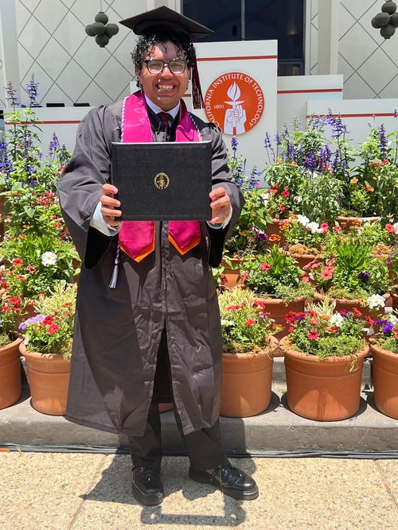
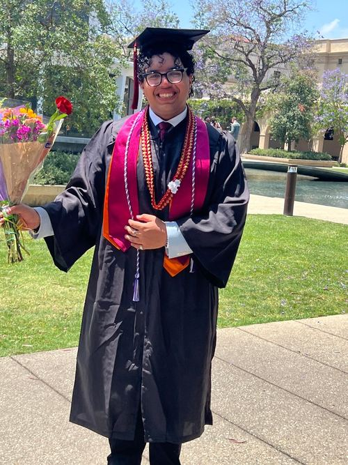
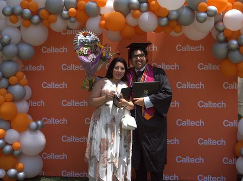
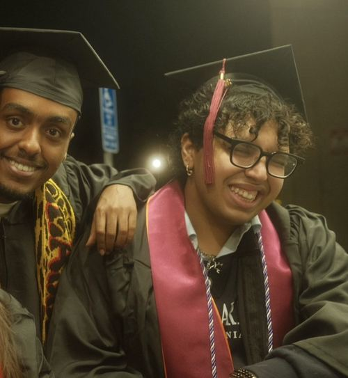

Caltech · NASA JPL · Roman Space Telescope
Astrophysics, data systems, and public-facing science
Union City, NJ → Pasadena, CA → New York City
Born in Morocco, Ramzi Saber arrived in the United States in 2009 speaking no English. He and his mother were homeless for a time — navigating a new country with nothing but will. From those streets, he looked up — and built a life around that horizon.
At 15, he began independent astronomy research that led to an exoplanet discovery and major science-fair recognition.
He earned a degree in Astrophysics at Caltech, interned at NASA JPL on the Roman Space Telescope — producing work scheduled for launch integration — and co-authored multiple peer-reviewed papers. From Union City to the instrumentation of a space telescope — and now into the next chapter.




"My true passion is to aid in humanity's development of knowledge of what's out there — not just by leaving a hypothetical, but by actually showing them… whether it's by a satellite, a telescope, a rover, or a rocket ship." — Ramzi Saber · Diversity in Action Magazine · May/June 2020
Engineered image post-processing algorithms in MATLAB for the Roman Space Telescope's Coronagraph Instrument, removing cosmic-ray artifacts using Laplacian Edge Detection. Validated via 150,000+ Monte Carlo simulations at 96% accuracy. Work is published and scheduled for integration into the telescope's official launch software.
Built and maintained an astronomical database of over 400,000 stellar objects. Architected back-end astrometric algorithms in Python and Django. Revamped the front-end with JavaScript and HTML/CSS — improving researcher access globally.
Organizes a summer research camp of 600+ students. Built partnerships with NJIT, NJCU, Rutgers, Columbia, and Princeton. Students have gone on to win national awards and scholarships.
Led a multi-agency Hudson River contamination study. Developed a decision-support framework adopted by the council for ongoing environmental policy decisions.
Research on urban water treatment. Demonstrated a prototype additive reducing pollutant levels. Received top honors at both NJ and NY ACS Symposia.
Advised immigrant families on university costs, retirement, and investments — increasing financial readiness for enrollment.
Led team to build algorithmic note-taking for medical personnel — cutting charting time by ~20%. Won 1st place in J&J's intern innovation challenge.
One of only 6 Astrophysics majors. Senior thesis: "Direct Imaging of Exoplanets Closer to Stars." 10-week Synthetic Biology fellowship. Multiple published papers. NASA JPL internship.
GPA: 4.7 · National High School Genius Inductee 2021. Astronomy Club & Research Club Founder. Class President. First freshman in Union City history to win gold at NJ Regional Science Fair.
Why HD-92788? "It's the same size as our sun and the same type of star as our sun, and, as we know, our sun holds eight planets. I thought it was a possibility that because of the type of star it is… it should have more than two exoplanets orbiting it."
The planet is a gas giant located approximately 113 light-years away — roughly three times the size of Jupiter. Submitted for NASA confirmation while still in high school, without a university affiliation.
Astrophysics research, data science collaboration, or something entirely new — Ramzi is always looking to climb higher.